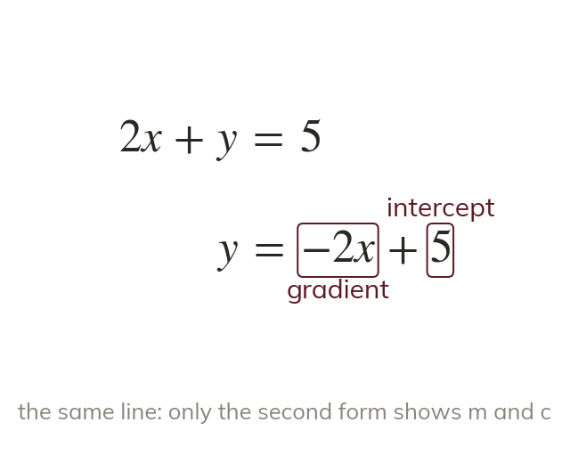
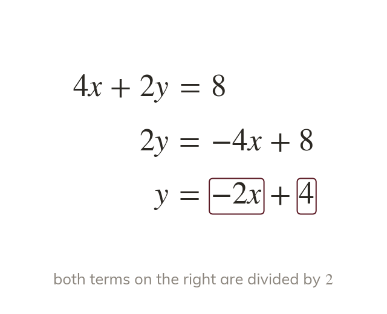
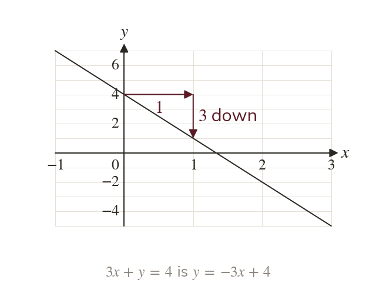
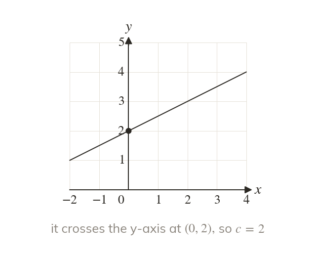
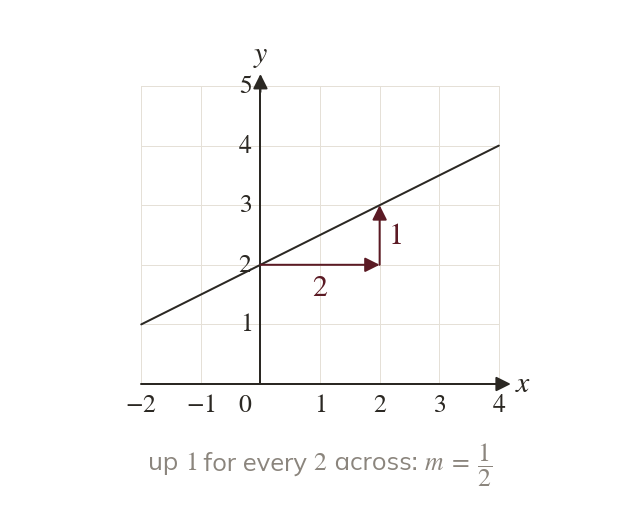
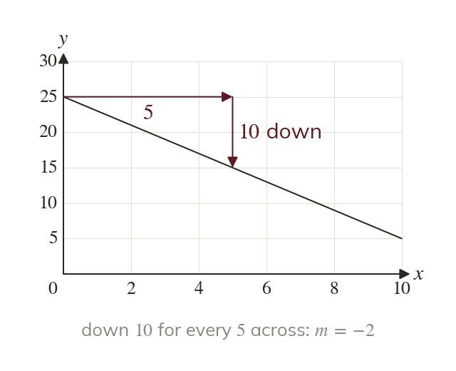
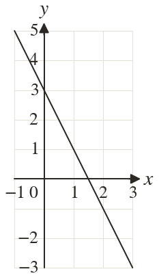
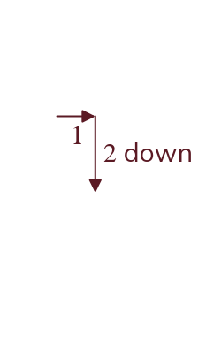
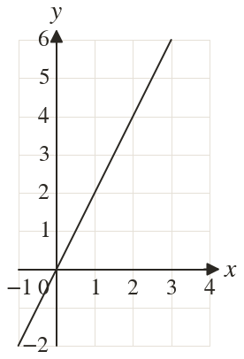
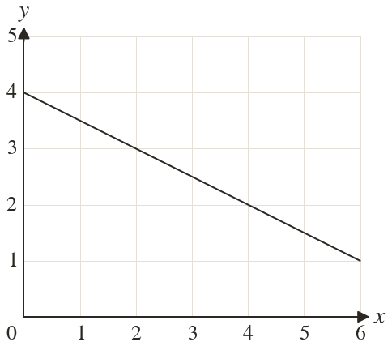

Only = mx + shows m and
The gradient and intercept show only when is the subject. In the is not the gradient.
Equations of lines turn up in many shapes, such as from a budget or a mixture. Rearranged into = mx + any of them shows its gradient and intercept at a glance.
Work down the page at your own pace. Write every answer in your book first, then click to check it.
Read each card, then follow the worked examples one step at a time.

The gradient and intercept show only when is the subject. In the is not the gradient.

Rearranging uses the same balancing moves as solving. Dividing by the coefficient of y divides every term.

Moving the term across changes its sign. So has gradient and slopes down.
Pick an answer. If it's wrong, the feedback tells you which mistake it was.
Read each card, then follow the worked examples one step at a time.

The y-intercept is where the line crosses the y-axis. There so

Two points on grid corners can be read exactly. The gradient is the change up divided by the change across.

A line falling from left to right has a negative gradient. Read each scale before counting squares.


Pick an answer. If it's wrong, the feedback tells you which mistake it was.
Printable worksheet — the questions with room to work.


Finished? Next lesson: 10H.13.3 Finding y = mx + c from Two Points.
Log in, then search for a code to practise that skill.
Videos, worksheets and more on each part of this lesson.